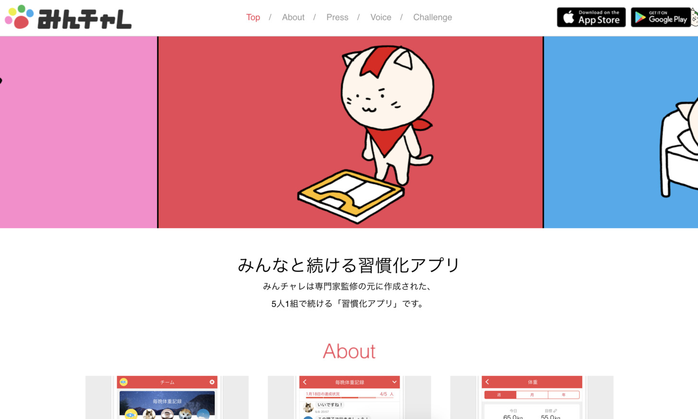

読書メモ: 世界標準の経営理論 - 第27章 ソーシャルキャピタル理論
この記事は書かれてから1年以上が経過しており、最新の情報とは異なる可能性があります
前回の 読書メモ: 世界標準の経営理論 - 第26章 ストラクチャル・ホール理論 の続きを読んでいきます。
この本面白いので、ついついそのまま次の章を読みたくなってきちゃうんですけど、 ぐっとこらえて毎回1章ずつを読んでメモに残すというルールを自らに課しています。 やってみてもその方が理解が深まって結果的に良かったなと思ってるところです。
あと、これは何度か触れてますけど、これやっぱり順番に読んだ方がいいですねw
僕、居酒屋のメニューの並び順とかけっこう気にする方なんですけど、 やっぱりその順序に並べてあるってことは、何らか理由があるってことじゃないですか。 メニューで言うと、価格順、人気順、あいうえお順などなど・・・。
ここまで読んできて、おそらく歴史順がベースにあって（ところどころに古典経済学、みたいなワードが出てくるのもたぶんそれ）、 それを第2ソートとして人気順みたいなのがあるのかな、って気がしてます。 なので、やはり順に1章ずつ読んでいくのが一番良い読み方なのかなと。
さて今日も1章分！
「ここの理解少し間違ってるよ」などあれば、どしどしご指摘いただければと思います。
『第27章 ソーシャルキャピタル理論』の概要
第27章はまとめるとこんな感じの内容でした。
- 人と人とのつながりで得られる便益すべてを総称してソーシャルキャピタル といい、金融資本、人的資本に続く第3の資本
- ソーシャルキャピタルには、 ブリッジング（ bridging ）型 、 ボンディング（ bonding ）型 の2種類ある
- ブリッジング型、これまで出てきた 弱いつながりの強さ、ストラクチャル・ホール理論 で出てきたようなネットワークで、 つながっていないプレーヤーを媒介することで得られる便益
- ボンディング型、ブリッジング型とは真逆の 高密度に閉じたネットワーク で、 通常のビジネスでは取引できないようなモノがやりとりされ、参加者全員のメリットになる便益
- 同じソーシャルキャピタルでも、 ボンディング型の効能はブリッジング型と全く異なる、両者の違いを理解するの大事
- リアルな人々のつながりでは、ブリッジング型を目指す 動き、最初からブリッジング型が強い デジタルでは、ボンディング型を取り込む 動きがあり、 適切なバランスを見抜くことが重要
ソーシャルキャピタル、人と人とのつながりで得られる便益
このソーシャルキャピタルというワード、様々なところで使われるようになっているらしいのですが、 地域再生の文脈でも使われているそうな。
経営学の範囲では、ソーシャルキャピタルのことを複数の個人・集団の間に存在する『善意』だとされているようです。 善意ですか・・・。 これたぶん一般的にいう善意と学術的に言われている善意ってなんとなく意味合い違うような気もしますけども。
さらに筆者なりに噛み砕いて言い直せば、と書いてあって、そこでは 人と人とのつながりで得られる便益すべて 、といえるだろうとあります。なるほど。こっちのが分かりやすい。
また、ソーシャルキャピタルには、 ブリッジング（ bridging ）型 、 ボンディング（ bonding ）型 の2種類あるとのことでした。
- ブリッジング型
- ボンディング型
たぶん前者は「弱いつながりの強さ」理論のブリッジからきてる名前で、後者は bond 、絆からきてる名前なんだと思います。 （ちなみにこのページ、500ページなんですけど、 bridging が briding って書いてあって誤字っぽさ）
ブリッジング型のソーシャルキャピタル
ここでは前々章、前章の復習とも書いてあるんですが、 これまで出てきた 弱いつながりの強さ、ストラクチャル・ホール理論 の2つの理論で説明できる便益すべてのことを、 ブリッジング型のソーシャルキャピタル 、と呼んでいます。
後でブリッジング型、ボンディング型の比較の話が出てくるので、一旦ブリッジング型のソーシャルキャピタルはこんなところで。
ボンディング型のソーシャルキャピタル
ここが本章で新しいところですね。
これまでは、低密度なネットワーク、弱いつながりのネットワークのメリットばかりが話に出てきていたのですが、 一方で 高密度に閉じたネットワーク においてもいくつか特徴があってメリットもあるよ！というのがボンディング型であり、 ボンディング型のソーシャルキャピタル です。
メカニズムとして3つあります。事例とともに。
- 信頼
- 信頼関係を醸成しやすい
- 自分の便益を相手に与えたら、相手もそのうち何か返してくれるだろうといった暗黙の期待
- 例: ユダヤ商人のダイヤモンド取引、商人同士で信頼関係が築かれている
- ノーム （暗黙の行動規範）
- 我々はこのように振舞うべき、といった暗黙の規範
- ルールがノームとして暗黙的にシェアされ、円滑に取引され、情報、知識、金などが蓄積していく
- 例: マフィア、明示的な行動規範がないが暗黙のルールが徹底されている
- 相互監視と制裁
- ボンディング型のソーシャルキャピタルは公共財の側面がある
- ただ乗りを防ぐために相互監視し、行動がノームから外れているものを制裁する
- 例: 村八分
- 例: 江戸時代の株仲間制度、株仲間で互いの台帳を公開し合うことで相互監視、仮に不正に書き換えてもすぐバレて追放される
正直なところ、村八分とか「うわあ・・・」ってなっちゃう派ではあるんですけど、 こうやって言われてみると、ああ確かに強いつながりで閉じたネットワークならではのメリットあるよなあと思うところです。
まとめると、ボンディング型のソーシャルキャピタルとしては、 通常のビジネスでは取引できないようなモノ・情報・コンテンツがノームに基づいてやりとりされ、参加者全員のメリットになる便益 だったり、 あるいは安心などが手に入ったりと、 ブリッジング型にはなかったボンディング型独自の便益が得られるよ、とされています。
上にもちょこっと事例としてマフィアの話とか、株仲間制度の話とかがあるのですが、 ボンディング型ソーシャルキャピタルの事例が7つ紹介されていて、どれも面白い話なので、 ぜひとも読むといいと思います。 （ブロックチェーンは、江戸時代の株仲間制度と仕組みは変わらないって話も、なかなか興味深かったです）
ブリッジング型とボンディング型の違い
このように、ブリッジング型のソーシャルキャピタルだけではなく、 強いつながり、高密度なネットワークからくるボンディング型のソーシャルキャピタルもあって、 これらは全く異なるもの、ある意味正反対の効能だとも言われています。
両者の違いを理解することは極めて重要だ と筆者も言っていて、 ブリッジング型とボンディング型は共存しつつも相反関係にもあるので、ソーシャルキャピタルのバランスを探ることが競争力に直結すると、とされています。
図表でこの辺違いがあるよ、というのがまとめられているので、リストにまとめ直してみます。
- つながりの強さ
- ブリッジング型: 弱い
- ボンディング型: 強い
- ネットワーク構造
- ブリッジング型: Sparse （希薄） , Open
- ボンディング型: Dense （密な） , Closure
- メカニズム
- ブリッジング型: ブリッジ、ブローカレッジ
- ボンディング型: 信用、ノーム、相互監視と制裁
- 便益
- ブリッジング型: 多様な情報・知が手に入る、など
- ボンディング型: 通常のビジネス取引ではできない取引が可能、など
確かに全然違いますね。
SNS 1つ取ってみても、実名でやりとりしているフェイスブックなんかはボンディング型を促しているので、 ボンディング型のメリットを享受しやすそうですし、逆にツイッターは弱いつながりを促している面もあるので、 ブリッジング型のメリットが多くありそうです。
ブリッジング型とボンディング型のバランスが大事
ここが一番大事なところですかね。
筆者によると、これまでの日本はボンディング型ソーシャルキャピタルに強かったが、強いつながりであるがゆえに、 イノベーションが起きない状態に陥ったのでは？と紹介しています。
リアルな人々のつながりでは 、上にもあるようにボンディング型になりがちなところがあるので、 ゆるくつながる ブリッジング型を目指す流れ があるようで、 逆に最初からブリッジング型が強いデジタルでは 、 信頼関係が作りにくいためにフリーライダー問題が起きやすい、といった問題があるので、 ボンディング型の要素を取り込む流れ がある、と紹介されてます。
これ個人的にはすごく良い事例を最近知って、 （あっ以下書籍に載ってない話ですいません・・・） Google Play ベストアプリ 2016 / 2017 / 2019受賞したという『みんチャレ』というサービスが、 まさにこの良きバランスを体現してるのかなと読んでて思ったところです。

これって自分一人だと中々継続できないことを、5人組のグループ作ってやりましょう、ってやつで、 基本ベースがブリッジング型のゆるいデジタルなつながりではあるものの、 一定の信頼関係を作るためにグルーピングだけするといった、少しだけボンディング型の要素を取り込んだ良い例だなあと思ったところです。
まとめ
- ソーシャルキャピタルにおける、ブリッジング型とボンディング型の両者の違いを理解するの大事
- リアルではブリッジング型を取り入れる、デジタルではボンディングの要素を取り入れる、最適なバランス大事
僕自身、軸足をデジタルの方に置くことが多いので、 そういう意味ではブリッジング型のソーシャルキャピタルにけっこう目が行きがちなんですけど、 今回読んでて思ったのが、ボンディング型にはまた別の良い面があったりもするので、 そういうのを適宜取り入れて行かないとダメだなーと思う次第です。
うーん、言語化できるといいですね。すっきり。
こうやってなんとなく利用しててメリットは感じてるけど、 言語化できないみたいなのはあるので、「ああ、これってこういう現象だったのか」って名前が呼べるだけでも大変ありがたいです。
この記事は書かれてから1年以上が経過しており、最新の情報とは異なる可能性があります